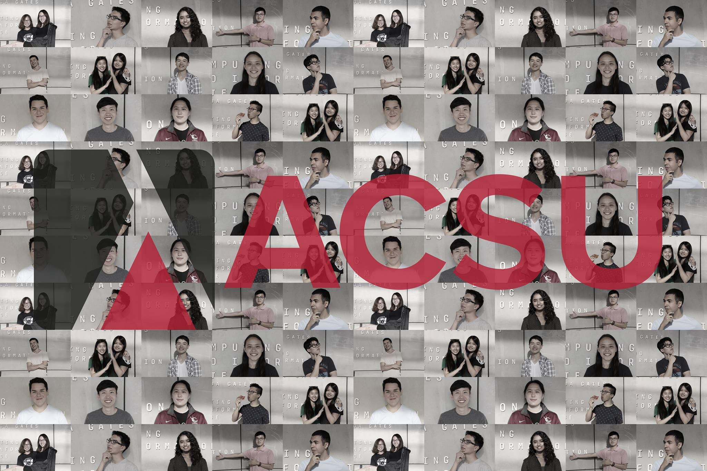

<script>
$(".navbar-custom").css('background-color', '#272940');
</script>

<!-- Section: hacsu -->

<section id="calen" class="home-section text-center">
    <div class="wow bounceInDown" data-wow-delay="0.4s">
        
        <h2> Latest Stories </h2>
        <div class="hacsu-container">
            {% assign rows = site.data.hacsu.posts.size | divided_by: 4.0 | ceil %}
            {% assign data = site.data.hacsu.posts %}
            {% for i in (1..rows) %}
                {% assign offset = forloop.index0 | times: 4 %}
                <div class="row">
                {% for post in data limit:4 offset:offset %}
                    <div class="col-xs-6 col-sm-3 col-md-3">
                        
                        <p>{{ post.body }}</p>
                        <p style="font-style: italic">{{ post.person }}</p>
                    </div>
                {% endfor %}
                </div>
            {% endfor %}
            </div>
        </div>
    </div>
</section>

<!-- /Section: hacsu -->